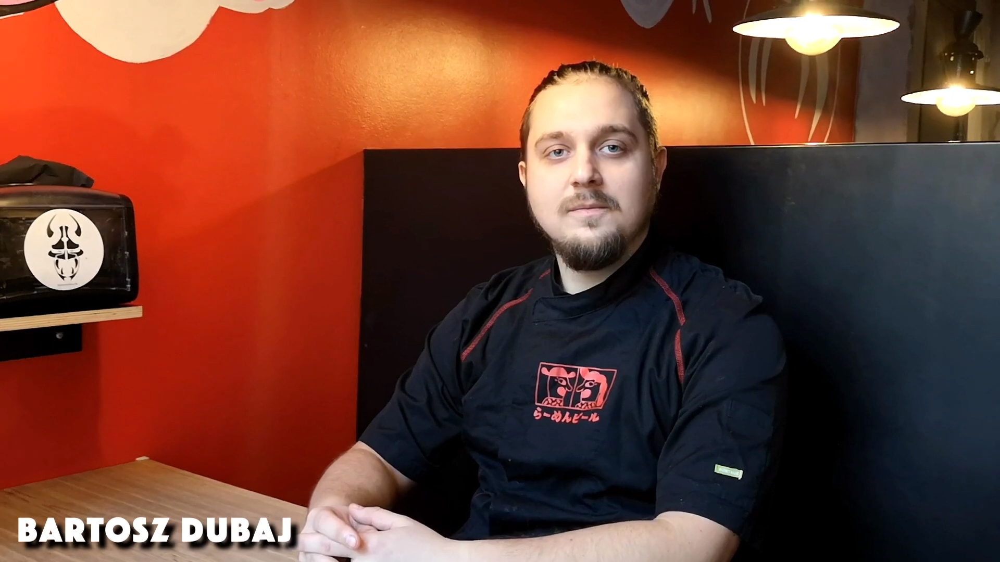
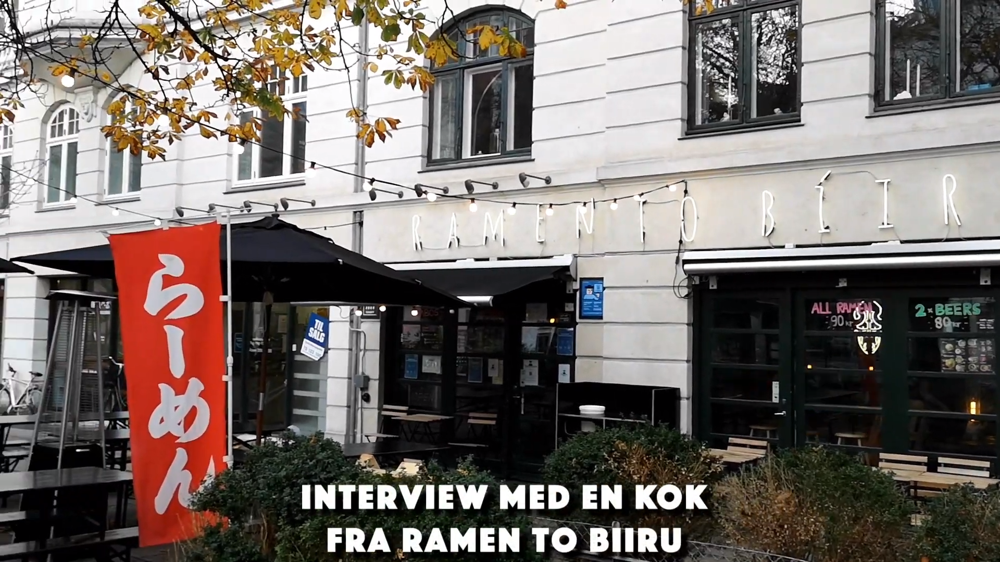
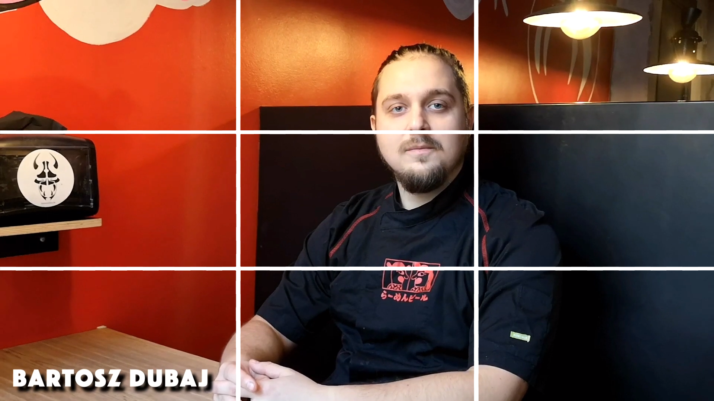

Pilotprojekt

(Du kommer ind på opgaven vet at trykke på billedet ovenover)
Opgave: 05.01.01 Pilotprojekt
Værktøjer: Adobe Premiere / Adobe Audition
Projekt type: Optagelse / Videoproduktion
I Tema 5 blev vi introduceret inden for videoproduktion, herunder forarbejdet inden optagelsen, selve optagelsen og postproduction. I denne opgave tog jeg et interview af en kok på Ramen To Biiru, videoen starter med et establishing shot i total beskæring, for at informere seeren om hvor man befinder sig henne og omgivelserne. Næste scene starter i halvnær beskæring, i normalperspektiv da det er intervieweren der er i fokus, men også fordi at tilskueren skal være i samme niveau som motivet, så det virker så naturligt som muligt. I denne scene er der også blevet gjort brug af det gyldne snit, for at sætte opmærksomheden det rigtige sted og skabe harmoni. Gennem hele interviewet er der B-rolls af selve restauranten og maden, for at oplyse tilskueren yderligere om miljøet. Metoden som disse B-rolls er klippet på hedder usynlig klipning, det skaber kontinuitet og det hjælper tilskueren med at glemme at det er en film. Der er også lagt rettighedsfri underlægningsmusik for at understrege stemning i videoen. I det efterfølgende projekt “05.03.01 Redesign og temadokumentation” anvendte vi de samme filmiske virkemidler til et interview, hvor vi præsenterede en virksomhed.
Establishing shot i totalbeskæring

Rule of thirds
